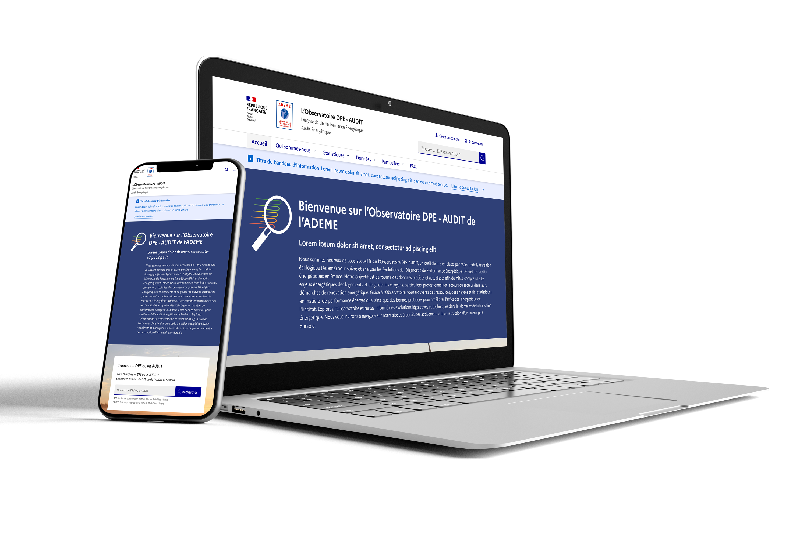
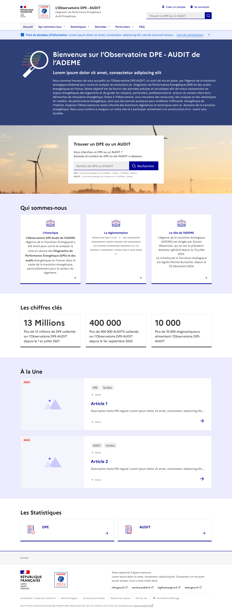

Le DPE (Diagnostic de Performance Énergétique) évalue la consommation énergétique et les émissions
de gaz à effet de serre des logements et des bâtiments. L’ADEME centralise ces diagnostics au sein d’un observatoire national,
permettant de consulter les données et d’analyser les performances énergétiques du parc immobilier français.
Durant mon alternance chez Scalian, j’ai eu l’opportunité de travailler sur ce projet,
contribuant ainsi à une initiative au service de la transition énergétique et de la rénovation des bâtiments.

Le projet DPE a été le plus important que j’ai eu à gérer durant mon alternance chez Scalian.
Basé sur le DSFR (Système de Design de l’État),
il m’a demandé plusieurs semaines de travail pour concevoir une maquette complète,
déclinée sur différents formats d’écran afin d’assurer une expérience responsive.

Entre les attentes du client et les contraintes imposées par le DSFR,
ce projet a représenté un véritable défi de conception. Malgré les difficultés rencontrées,
cette expérience a été particulièrement enrichissante et m’a permis de renforcer mes compétences en design d’interface.